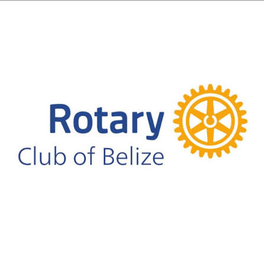

Our Clubs

Basketball Club
Students can practice basketball, improve their skills, and play games with others.
Learn More
Gardening Club
Students learn about plants, gardening, nature, and caring for the school environment.
Learn More
Dye-Namic Creations
Students can create designs, dye clothing, and make unique creative projects.
Learn More
Rotary Club
Students participate in volunteer activities, community service, and projects that help others.
Learn More